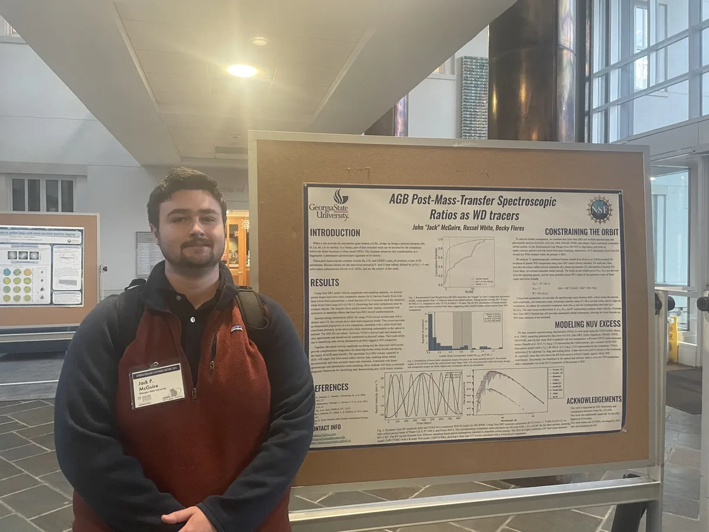

Primary research program
Barium Dwarfs and Post-AGB Mass Transfer
- The question
- Barium dwarfs are main-sequence stars whose surfaces carry heavy elements they could never have made themselves. The elements came from a companion that has since become a white dwarf. Known barium dwarfs cluster strongly among F- and G-type stars, so where are the cooler K- and M-type ones?
- Why it matters
- If cool barium dwarfs are genuinely rare, that tells us something physical about how efficiently an AGB star can pollute a low-mass companion, and at what separations. If instead they are simply harder to find, then the census that underpins a lot of binary-evolution work is biased in a way worth correcting.
- My role
- I led the sample analysis under Dr. Russel J. White at Georgia State University, first as a Raghavan Fellow and then as an undergraduate research assistant, and I am first author on the manuscript in preparation.
- Data and methods
- I investigated the 71 spectroscopically confirmed barium dwarfs using Gaia DR3 astrometry, radial-velocity statistics, archival spectroscopy, spectral-energy-distribution fitting with VOSA, and MIST evolutionary models. Python workflows built on NumPy, Pandas, Astropy, Astroquery and Matplotlib cross-match the catalogs, separate genuine dwarfs from evolved interlopers, and compare the sample against known white-dwarf–main-sequence binaries.
- Where it stands
- The work has moved well past its November 2025 poster. Establishing the F/G concentration motivated a targeted search for the missing cool population, and that search, together with comparisons to established white-dwarf systems and upper and lower bounds on companion masses forms the manuscript Where Are the K & M Barium Dwarfs?, in preparation with planned submission to an American Astronomical Society journal in Fall 2026.
